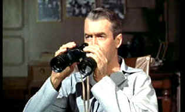

| Rear Window
(SE)/A,B- |
| Universal/1954/115/ANA
1.66 |
Alfred Hitchcock has constructed Rear
Window with devious precision. Gnawing under the surface is a teasing sense of right and wrong.
The director has total control of the elements in Rear Window. His protagonist is
glued to a static set. And what a fascinating set casting a voyeuristic shadow upon protagonist and
audience alike.
News magazine photographer L. B. Jefferies is stuck in a wheelchair. That's what
happens when you get in the way of race car. But Jefferies did get the picture, which tells you
something about the man. Confined to his apartment, he's itching, figuratively and literally.
Things aren't really all that bad though. The gorgeous, vivacious, high fashion lady Lisa Fremont
wants to marry Jefferies. His confinement is almost over and there's always the windows of the
courtyard apartments for entertainment.
 |
| Peeping Tom or responsible citizen? ©Universal |
An assortment of stories play out in the
courtyard procenium arch before Jefferies' inquisitive eyes. Miss Lonelyhearts fantasizes about
sharing a romantic dinner with a man. A composer strokes the keys of his piano is hope of success.
A dancer practices her moves in scanty outfits. It's hot, sizzling summer hot. Jefferies sits
watching these set pieces play as beads of perspiration form on face like a rash of guilt The
benign and humorous complexion of the observations changes dramatically when Jefferies realizes
something suspicious is happening in the salesman's apartment.
James Stewart’s L. B. Jefferies has a darkness to him sort of left over
from the Anthony Mann westerns. His sarcasm and cynical attitudes toward domesticity are thoroughly
biting. Stewart is outstanding is this second teaming with Hitchcock. The actor's expressive voice
makes this wheelchair performance quite limber and mobile. Grace Kelly is perhaps more appealing in
Rear Window than in any other film. She’s the bright light in all those dim interiors.
Kelly captures a dilettante's spirit with good nature and displays an appealing mischievous side.
She and Jefferies are a rather strange pair. One wonders what bonds them together, but then you
must remember that Jefferies is confined to his wheelchair and those heavy casts aren't exactly
conducive to high spirits.
The stars get some excellent support. Thelma Ritter, playing Jefferies'
nursemaid is up to trading jibes with Stewart. Ritter's washboard voice delivers most of the
humor of Rear Window. Wendell Corey is less convincing in the role of Lieutenant Doyle,
Jefferies' wartime buddy. The small roles viewed mostly from the window perspective of Jefferies
are all performed quite nicely.
The set itself is a wonderful character. It's fascinating to watch through the
windows of the courtyard apartments. Robert Burks delivers outstanding camera work and lighting and
the script from John Michael Hayes is consistently keeps brilliantly glued to the courtyard
perspective.
Details of the set construction revealed in the accompanying documentary
are fascinating. There are also glimpses of the restoration work done by Bob Harris and Jim Katz.
In fact, the accompanying documentaries on all the Hitch DVDs seem consistently good. Robert Burks
is on hand on to talk about the challenges of lensing the Rear Window set and Patricia
Hitchcock O'Connell adds her her memories of her father's film. Georgine Darcy who played Miss
Torso shares her memories of Hitchcock's natural direction wisely giving her the freedom to
improvise her dance moves, while assistant director Herbert Coleman looks back on his years with
Hitchcock. Peter Bogdanovich adds a filmmakers and film scholars perspective.
I was expecting a lot from the transfer from the restored Rear Window
elements, but was ultimately disappointed. It’s a bit soft and there are still scratches
and dirt despite the restoration. I think Harris mentioned in the documentary that a decision had
to be made to focus the restoration for color or for sharpness and they chose color. Well, the
color is very good. Grain is also unexpectedly heavy. Perhaps the softness of the original elements
may have dictated more emphasized resolution enhancement thereby inadvertently exacerbating the
grain. The excellent Franz Waxman score cleanly embellishes the action in Dolby Digital 2 channel
mono. |
|
|
|

Selections from the Feature Archive
include articles on Akira Kurosawa, Frank
Darabont, Blonde Bimbos, Hollywood Street Gangs, or Vietnam: The
Hollywood Pariah, and many more....
Is North by Northwest Hollywood's definitive exploration of the nose? From schnozzles to
beezeers, film mavens make the most of the foremost. Click on Mount Hitchcock for more.


DVD
Demystified makes it all clear.The official Internet DVD FAQ for the rec.video.dvd
Usenet newsgroups.

European film portal and hard to find video store.

An on-line Home Theater magazine with excellent hardware reviews,
including thorough and responsible research. Check it out.

The
Movie Poster Archive includes extensive poster images from the films of stars like Susan Hayward,
Kirk Douglas, Katharine Hepburn and many more. Our featured star is James Stewart

Need a daily fix of movie
quotes. Reel Quotes Newsletter has the answer. Click on the Reel Quotes symbol for more.

Three Kings/A-,A
Three Kings speeds ahead like a formula one race car on the fast track to reckless
fascination.

Click on the DVD MIA symbol for
profiles of DVDs missing in action.
Add films to the DVD MIA Master List by filling out
a simple form. Click Here
|